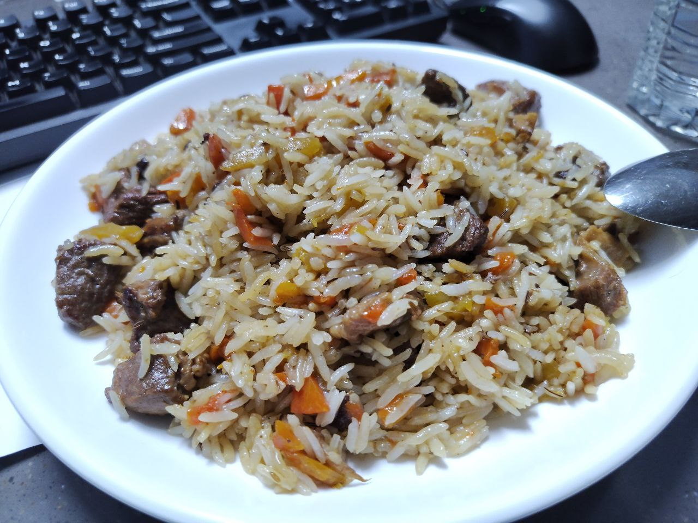

Plov is a centerpiece of Uzbek cuisine. Made of meat, oil, carrots and rice, it is considered staple food but there are numerous versions including luxury ones that are cooked only on special occasions.
The three main steps are frying, boiling and steaming the ingredients as detailed below.